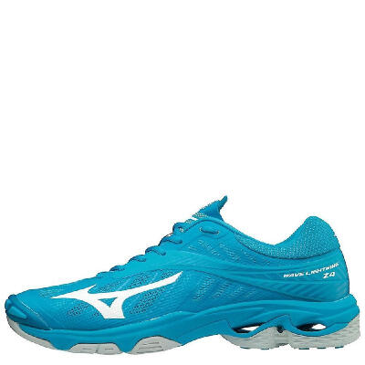

Penyu adalah hewan yang banyak di temukan bertelur di beberapa pesisir pantai di Indonesia sejak dahulu.
Ikan badut ini dapat dikenali dengan warna jingganya ikan ini tumbuh mencapai 8 cm serta termasuk dalam ikan terpopuler didunia.

Lionfish atau volitans adalah ikan berbisa milik keluarga yang Scorpaenidae terjemahan harfiah berarti ikan kalajengking.

Ikan Moorish Idol adalah salah satu ikan yang cukup populer di kalangan ara hobiis ikan hias karena bentuknya yang unik dan pola warnanya yang menarik.